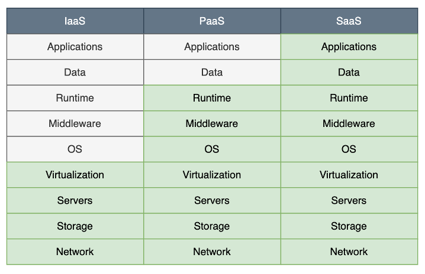
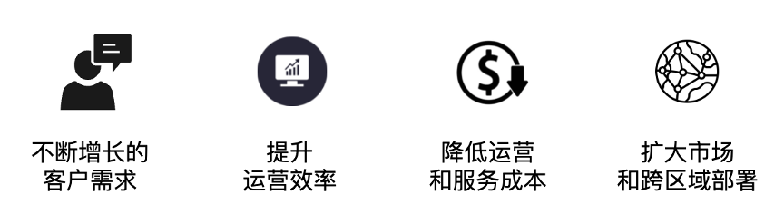
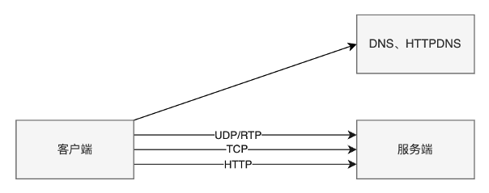
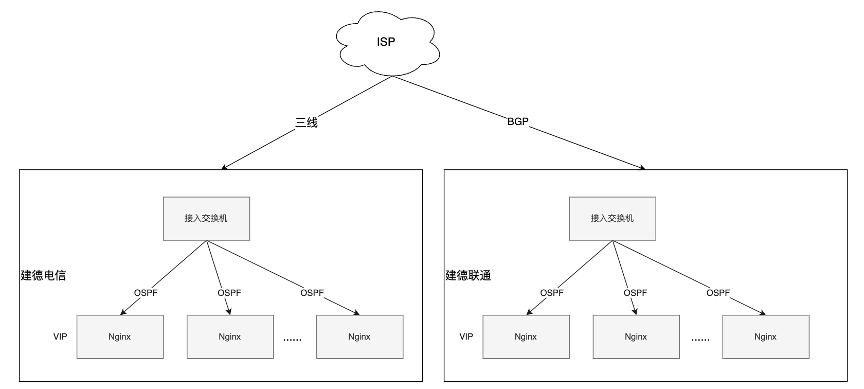
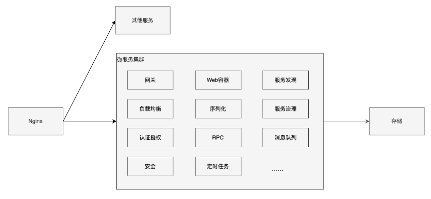
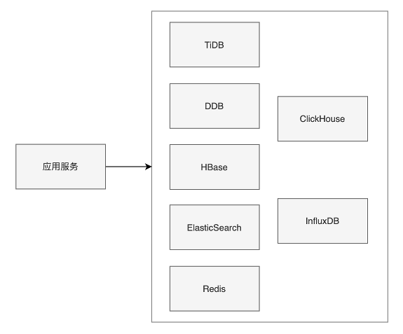
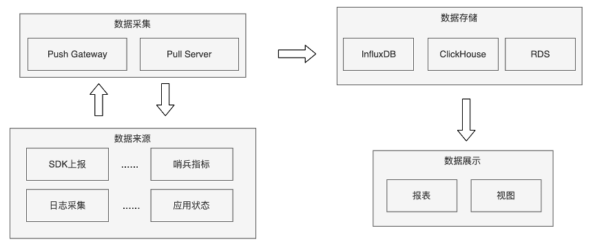
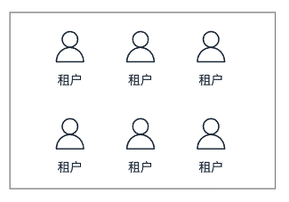
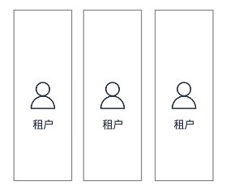
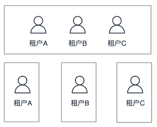

从0到1构建SaaS系统
SaaS系统的构建是基于互联网提供软件服务的应用模式。 在21世纪开始兴起的SaaS概念打破传统软件概念，SaaS模式随着互联网技术的发展和应用软件的成熟不断完善，是软件科技发展的最新趋势。
SaaS是什么
定义
相信大家都对云服务中的IaaS、PaaS、SaaS早就有所耳闻，现在更是衍生出了aPaaS、iPaaS、DaaS等等的类似概念。对于SaaS也有各种各样的定义，这里我们给出的定义是：
SaaS是一种基于互联网提供服务和软件的交付模型，所有网络基础设施及软件、硬件运作平台的所有前期实施、后期维护都由SaaS平台完成，用户只需要租赁软件服务并通过互联网接入使用。SaaS模型依赖敏捷性和运营效率，作为推动增长、覆盖和创新的业务战略的支柱。 业内大家通常会以Salesforce作为SaaS的标杆。

价值
目前市场上越来越多的企业和组织采用SaaS服务来替代原来传统的软件采购部署方式，其原因可以主要总结为以下几个方面。

另外，相比于传统软件，SaaS的盈利模式也决定了客户的成功对于SaaS产商来说极其重要，只有客户成功了，才会有续费， SaaS项目才有办法继续下去。当然SaaS相比传统软件也会有一些缺点，如独立性、可控性、个性化等。
基础架构
SaaS系统通常首先是一个普通的分布式系统，因此它一定具有分布式系统的所有组成要素，如服务发现、负载均衡、序列化协议、传输协议、授权认证、网络安全等等。
入口
客户最直接接触的通常是SaaS系统的客户端，客户端的形式可以根据业务的需求决定，常见的有浏览器网页、移动端APP、小程序、智能设备等等。
客户端到服务器的入口通常是一个通用域名或者是每个租户的独立子域名。如网易互客的入口是huke.163.com，网易七鱼的入口是xxx.qiyukf.com。域名的背后就一定需要DNS的存在，需要配置出合理的DNS解析，通常传统的基于UDP的DNS服务容易受到中间人攻击，存在被劫持的风险，另外也存在被运营商封禁等情况，因此SaaS系统通常搭建自己的HTTPDNS来规避风险。
有了域名作为入口之后，下一步就是客户端和服务器之间的通信协议，对于少数简单的SaaS系统来说只要通过域名和HTTP协议就可以完成所有服务，但大部分SaaS系统都会存在双向通信的需求，因此还需要维护长连接通道，常用的如原生TCP协议，或websocket协议。另外如果业务中有媒体流传输的需求，还会用到UDP，RTP协议等等。当然，目前市场上对于各种场景和需求都有对应的成熟解决方案，因此SaaS系统通常不会去从0开始解决所有问题，如长链接和媒体流我们可以集成网易云信的服务来解决。
接入层
接入层通常是各种路由协议以及多层代理组成，如运营商和AS之间通常用BGP协议或者三线，机房内部通常会有接入的三层交换机，四层代理等等。网易七鱼目前的接入方案如下图所示，而对于规模较小的业务，为了灵活性和性价比，通常会在交换机和Nginx之间加入四层代理nlb。这一层基本都是由集团的SA同学负责搭建和运维。
业务层
这里我们不去讨论业务上的各种设计模式和分层，因此把接入层之后数据层之前的所有服务和设施统称为业务层。通常业务层是一个SaaS系统研发中投入资源最大的，线上问题如性能瓶颈、稳定性、安全漏洞等大部分都来自于业务层，因此该层也是开发和线上运维的重点。
在业务层目前SaaS系统最常用的还是微服务的架构，不同于IaaS或PaaS，SaaS业务的一个重要特征是其业务复杂度很高、业务链路很长，而微服务的架构刚好可以很好的应对这种情况。当然在业务刚开始的时候，我们可以用简单的单体应用来快速实现原型验证，等业务发展起来后再开始逐步微服务拆分。
流量通过接入层后，一般为了系统的灵活性，会通过Nginx的upstream来转发请求到网关，由网关统一分发到对应的业务服务，而业务服务又可以拆分为许多独立的微服务相互调用。这也就带来了SaaS系统中的大部分常见问题，如：
谁可以使用什么服务？（租户管理）
服务在哪里？（服务发现）
请求应该由哪个服务节点处理？（负载均衡）
信息怎么传输？（传输协议）
如何避免一个租户影响另一个租户？（资源隔离）
输入和输出如何表示？（序列化协议）
网络出现分区、超时或者服务出错了怎么办？（熔断、降级、服务治理）
服务权限如何管理？（认证授权）
如何保证通信安全？（网络安全）
重要程度和依赖关系怎么样？（服务分级）
如何保证不同机器的服务状态一致？（分布式数据一致性）
等等，这些全都需要研发人员投入大量的精力，每个点展开细说都是一个很大的话题。基于业务和技术的考虑，通常还需要引入消息队列、缓存、配置中心、定时任务等组件。
数据层
所有业务逻辑，最后一定都会在数据存储上得到体现。在一个SaaS系统中，最常用的存储依然是关系型数据库，如我们的DDB、另外常用HBase、TiDB等作为冷数据存储，ES、MongoDB等作为对应功能的数据存储。因此SaaS系统中多个数据存储之间的一致性是一个需要重视的地方。
对象存储方面，我们集团内有Nos，市面上的云厂商也都有相应的服务，不需要自己构建。不论客户存储的对象还是系统中的某些资源，为了提高客户的访问速度，我们都需要有CDN的存在。
SaaS业务中还有一个常见的需求就是BI，这要求系统具有数据分析能力，OLAP数据库也是必不可少的，网易云商采用的是ClickHouse。
在某些特定的业务场景，也许还需要用到TSDB，录入智能设备的传感器读数，用户的活动轨迹，系统的状态变化等等。
数据层还有一个非常重要，但经常被忽视的话题就是数据合规。特别是对于SaaS业务，因为面向的客户都是企业和组织，因此数据的安全合规是非常重要的。例如网易云商有专门的中间件用于数据库的敏感数据加密。
运维能力
到目前为止，一个SaaS系统基本已经搭建成型可以提供服务了。但是我们对系统的状态还一无所知，因此还要构建足够强大的运维能力。其中包括了可观测性、计量计费、快速恢复、故障演练、系统治理各个方面。以可观测性为例，我们需要采集系统中的各种数据并通过大量技术手段来观测系统的状态，如系统资源、业务指标、健康状态、链路追踪、业务埋点、报警管理、错误统计、流量水位、趋势分析、变更管理等。针对SaaS业务的特点，还需要特别对系统进行租户维度的监控和管理。
部署模式
SaaS系统根据隔离程度的不一样可以分为三种部署模式，每种部署模式都会涉及到架构的调整适配，都有各自的优缺点。
共享模式
指SaaS系统中的所有资源，如业务服务、数据存储等全部是共享的，这要是绝大分部SaaS系统一开始采用的模式，这种模式系统的优势是灵活性高，资源利用率高，采用集中化管理，开发运维更简单。缺点是租户间容易相互影响，合规性也容易被一些特定行业客户挑战，还有很难为不同租户提供差异化服务。
专属模式
指SaaS系统中几乎所有资源都是租户独占的，这种部署模式的优势是每个租户有完全隔离的环境，租户之间不会有影响，可以针对不同租户提供个性化的服务。但是缺点也很明显，这种部署模式的资源利用率低，成本高，运维难度高，管理复杂。通常会被用于一些特定行业或者特殊需求的客户场景。
混合模式
指SaaS系统中有部分资源是所有租户共享的，还有部分资源是租户独占的，这种模式是现在大型SaaS系统常见的部署模式，可以兼顾上面种模式的优缺点，针对不同的客户提供不同的解决方案。
未来发展
上面简要介绍了搭建一个SaaS系统的主要过程，尽管SaaS的设计初衷是快速为特定业务场景提供垂直解决方案，但企业对跨业务跨部门的需求也越来越强烈，例如营销服务一体化、私域运营等场景。因此，业界无论在业务还是技术方面都还在不断的探索之中，例如对于SaaS的成本控制，合规性，可扩展性，针对不同租户的差异化服务等等，都是SaaS产商经常面临的难题。有人在探索部署方式的优化，有人在探索产品的设计方案，有人在探索低代码的模式，还有人在探索生态合作的方案。无论如何，大家的的努力都是在为了客户的成功，回到我们的起点，只有客户成功了，SaaS才有存在下去的价值。